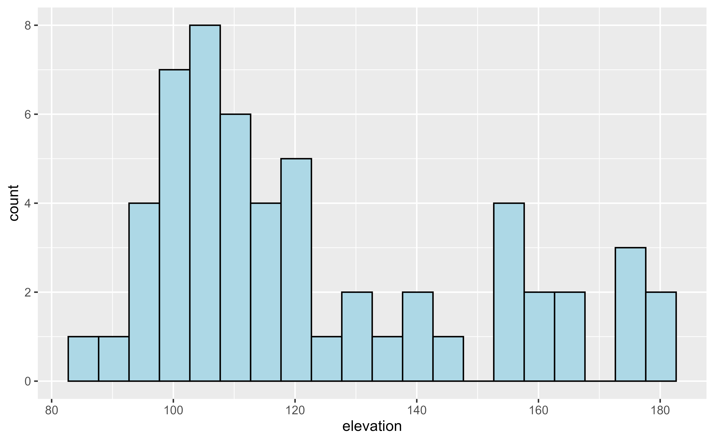
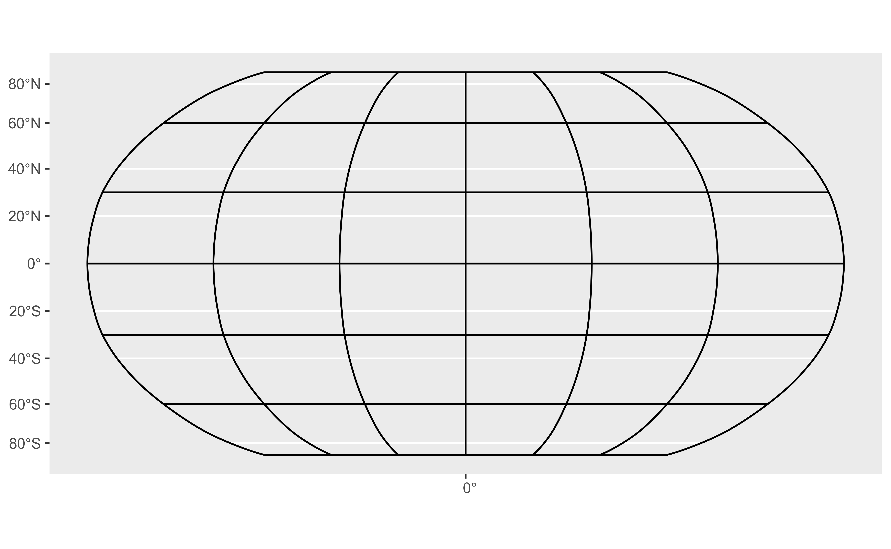
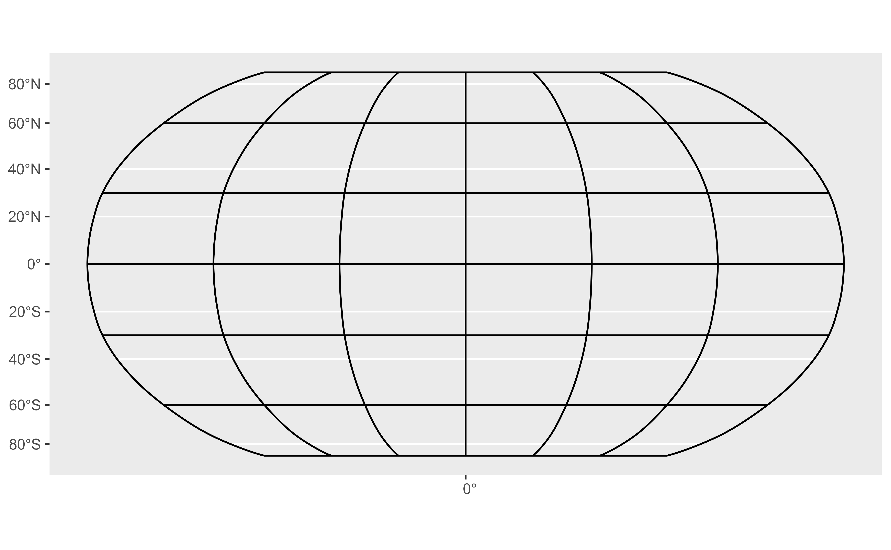

Fortify SpatRaster and SpatVector objects to data frames. This provide
native compatibility with ggplot2::ggplot().
Note that these methods are now implemented as a wrapper of tidy.Spat
methods.
Usage
# S3 method for class 'SpatRaster'
fortify(
model,
data,
...,
.name_repair = c("unique", "check_unique", "universal", "minimal", "unique_quiet",
"universal_quiet"),
maxcell = terra::ncell(model) * 1.1,
pivot = FALSE
)
# S3 method for class 'SpatVector'
fortify(model, data, ...)
# S3 method for class 'SpatGraticule'
fortify(model, data, ...)
# S3 method for class 'SpatExtent'
fortify(model, data, ..., crs = "")Arguments
- model
A
SpatRastercreated withterra::rast(), aSpatVectorcreated withterra::vect(), aSpatGraticule(seeterra::graticule()) or aSpatExtent(seeterra::ext()).- data
Not used by this method.
- ...
Ignored by these methods.
- .name_repair
Treatment of problematic column names:
"minimal": No name repair or checks, beyond basic existence,"unique": Make sure names are unique and not empty,"check_unique": (default value), no name repair, but check they areunique,"universal": Make the namesuniqueand syntactic"unique_quiet": Same as"unique", but "quiet""universal_quiet": Same as"universal", but "quiet"a function: apply custom name repair (e.g.,
.name_repair = make.namesfor names in the style of base R).A purrr-style anonymous function, see
rlang::as_function()
This argument is passed on as
repairtovctrs::vec_as_names(). See there for more details on these terms and the strategies used to enforce them.- maxcell
positive integer. Maximum number of cells to use for the plot.
- pivot
Logical. When
TRUEtheSpatRasterwould be provided on long format. WhenFALSE(the default) it would be provided as a data frame with a column for each layer. See Details.- crs
Input potentially including or representing a CRS. It could be a
sf/sfcobject, aSpatRaster/SpatVectorobject, acrsobject fromsf::st_crs(), a character (for example a proj4 string) or a integer (representing an EPSG code).
Value
fortify.SpatVector(), fortify.SpatGraticule() and fortify.SpatExtent()
return a sf object.
fortify.SpatRaster() returns a tibble. See Methods.
Methods
Implementation of the generic ggplot2::fortify() method.
SpatRaster
Return a tibble than can be used with ggplot2::geom_* like
ggplot2::geom_point(), ggplot2::geom_raster(), etc.
The resulting tibble includes the coordinates on the columns x, y. The
values of each layer are included as additional columns named as per the
name of the layer on the SpatRaster.
The CRS of the SpatRaster can be retrieved with
attr(fortifiedSpatRaster, "crs").
It is possible to convert the fortified object onto a SpatRaster again with
as_spatraster().
When pivot = TRUE the SpatRaster is fortified in a "long" format (see
tidyr::pivot_longer()). The fortified object would have the following
columns:
x,y: Coordinates (center) of the cell on the corresponding CRS.lyr: Indicating the name of theSpatRasterlayer ofvalue.value: The value of theSpatRasterin the correspondinglyr.
This option may be useful when using several geom_* and for faceting, see
Examples.
SpatVector, SpatGraticule and SpatExtent
Return a sf object than can be used with ggplot2::geom_sf().
See also
tidy.Spat, sf::st_as_sf(), as_tibble.Spat,
as_spatraster(), ggplot2::fortify().
Other ggplot2 utils:
autoplot.Spat,
geom_spat_contour,
geom_spatraster(),
geom_spatraster_rgb(),
ggspatvector,
stat_spat_coordinates()
Other ggplot2 methods:
autoplot.Spat
Coercing objects:
as_coordinates(),
as_sf(),
as_spatraster(),
as_spatvector(),
as_tibble.Spat,
tidy.Spat
Examples
# \donttest{
# Demonstrate the use with ggplot2
library(ggplot2)
# Get a SpatRaster
r <- system.file("extdata/volcano2.tif", package = "tidyterra") |>
terra::rast() |>
terra::project("EPSG:4326")
# You can now use a SpatRaster with any geom
ggplot(r, maxcell = 50) +
geom_histogram(aes(x = elevation),
bins = 20, fill = "lightblue",
color = "black"
)
#> <SpatRaster> resampled to 56 cells.

# For SpatVector, SpatGraticule and SpatExtent you can use now geom_sf()
# Create a SpatVector
extfile <- system.file("extdata/cyl.gpkg", package = "tidyterra")
cyl <- terra::vect(extfile)
class(cyl)
#> [1] "SpatVector"
#> attr(,"package")
#> [1] "terra"
ggplot(cyl) +
geom_sf()
 # SpatGraticule
g <- terra::graticule(60, 30, crs = "+proj=robin")
class(g)
#> [1] "SpatGraticule"
#> attr(,"package")
#> [1] "terra"
ggplot(g) +
geom_sf()

# SpatExtent
ex <- terra::ext(cyl)
class(ex)
#> [1] "SpatExtent"
#> attr(,"package")
#> [1] "terra"
ggplot(ex, crs = cyl) +
geom_sf(fill = "red", alpha = 0.3) +
geom_sf(data = cyl, fill = NA)
# }
# SpatGraticule
g <- terra::graticule(60, 30, crs = "+proj=robin")
class(g)
#> [1] "SpatGraticule"
#> attr(,"package")
#> [1] "terra"
ggplot(g) +
geom_sf()

# SpatExtent
ex <- terra::ext(cyl)
class(ex)
#> [1] "SpatExtent"
#> attr(,"package")
#> [1] "terra"
ggplot(ex, crs = cyl) +
geom_sf(fill = "red", alpha = 0.3) +
geom_sf(data = cyl, fill = NA)
# }